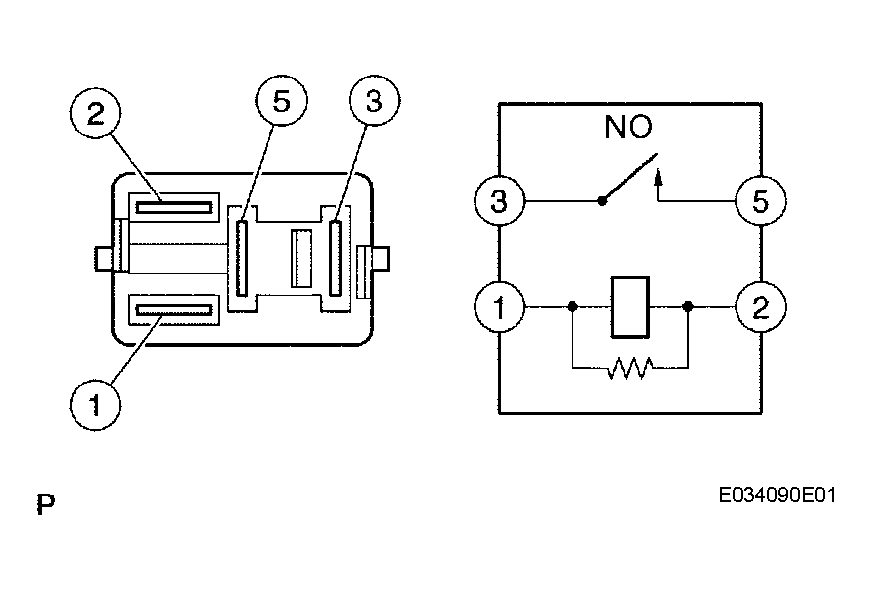
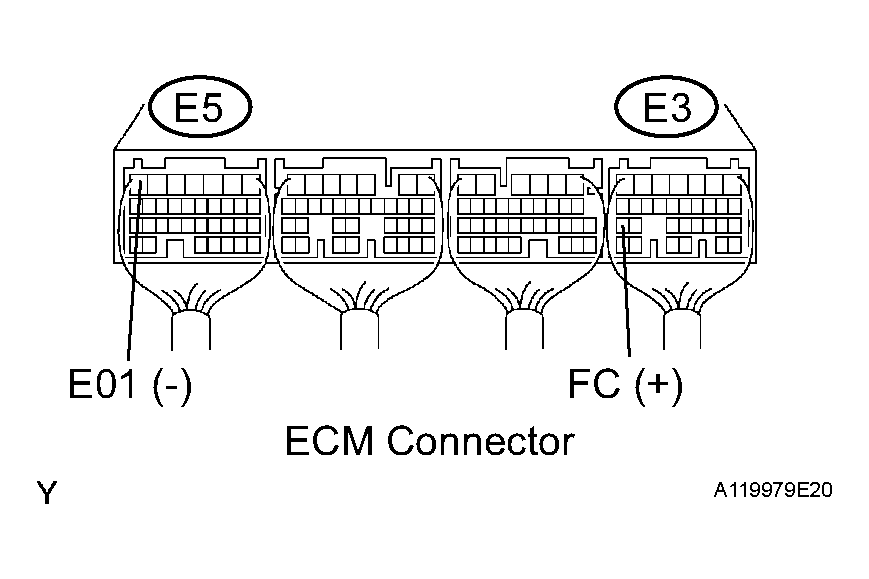
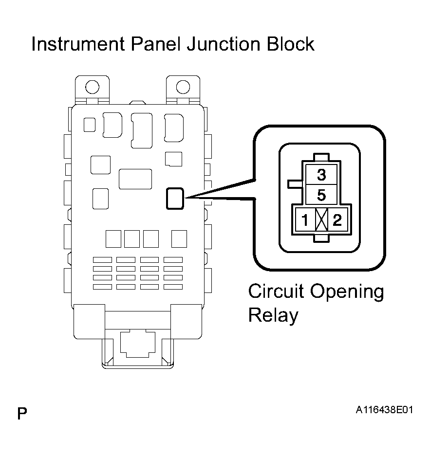
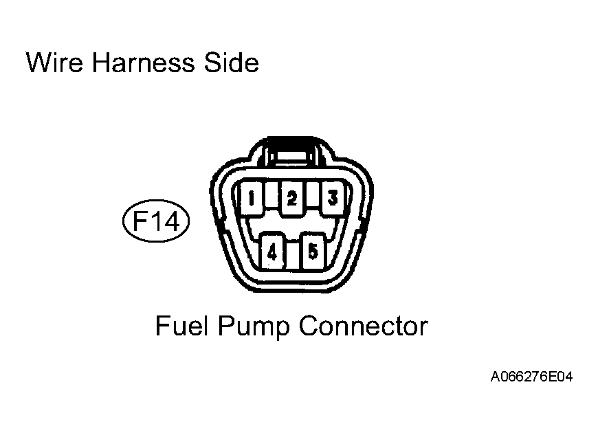

Inspection Procedure
- PERFORM ACTIVE TEST BY INTELLIGENT TESTER (OPERATION OF CIRCUIT OPENING RELAY)
- Connect the intelligent tester to the DLC3.
- Turn the ignition switch ON and turn the tester ON.
- Enter the following menus: DIAGNOSIS / ENHANCED OBD II / ACTIVE TEST / FUEL PUMP / SPD.
- Check whether operating sounds can be heard while operating the relay using the tester.
OK: Operating sounds can be heard from relay.
OK: Go to step 7
NG: Go to Next Step
- INSPECT ECM POWER SOURCE CIRCUIT
- Inspect the ECM power source circuit (see ECM POWER SOURCE CIRCUIT ).
NG: REPAIR OR REPLACE
OK: Go to Next Step
- INSPECT CIRCUIT OPENING RELAY (Marking: C/OPN)
- Remove the circuit opening relay from the instrument panel junction block.
- Measure the resistance of the circuit opening relay.
Standard resistance
TESTER CONNECTION - SPECIFIED CONDITIONSTester Connection Specified Condition 3 - 5 10 kΩ or higher 3 - 5 Below 1 Ω
(when battery voltage is applied to terminals 1 and 2)
NG: REPLACE CIRCUIT OPENING RELAY

Courtesy of © TOYOTA, LICENSE AGREEMENT TMS1002OK: Go to Next Step
- INSPECT ECM (FC VOLTAGE)
- Turn the ignition switch ON.
- Measure the voltage of the ECM connectors.
Standard voltage
TESTER CONNECTION - SPECIFIED CONDITIONSTester Connection Specified Condition FC (E3-25) - E01 (E5-7) 9 to 14 V
OK: REPLACE ECM

Courtesy of © TOYOTA, LICENSE AGREEMENT TMS1002NG: Go to Next Step
- CHECK HARNESS AND CONNECTOR (EFI RELAY (Marking: EFI) - CIRCUIT OPENING RELAY (Marking: C/OPN)
- Remove the EFI relay from the engine room relay block.
- Remove the circuit opening relay from the instrument panel junction block.
- Measure the resistance of the wire harness side connectors.
Standard resistance (Check for open)

Courtesy of © TOYOTA, LICENSE AGREEMENT TMS1002TESTER CONNECTION - SPECIFIED CONDITIONSTester Connection Specified Condition Engine room relay block (EFI relay terminal 3) - Instrument panel junction block (Circuit opening relay terminal 1) Below 1 Ω Engine room relay block (EFI relay terminal 3) - Instrument panel junction block (Circuit opening relay terminal 5) Below 1 Ω Standard resistance (Check for short)
TESTER CONNECTION - SPECIFIED CONDITIONSTester Connection Specified Condition Engine room relay block (EFI relay terminal 3) or Circuit opening relay (1) - Body ground 10 kΩ or higher Instrument panel junction block (Circuit opening relay terminal 5) - Body ground 10 kΩ or higher
NG: REPAIR OR REPLACE HARNESS OR CONNECTOR
OK: Go to Next Step
- CHECK HARNESS AND CONNECTOR (ECM - CIRCUIT OPENING RELAY)
- Disconnect the E3 ECM connector.
- Remove the circuit opening relay from the instrument panel junction block.
- Measure the resistance of the wire harness side connectors.
Standard resistance (Check for open)
Courtesy of © TOYOTA, LICENSE AGREEMENT TMS1002TESTER CONNECTION - SPECIFIED CONDITIONSTester Connection Specified Condition FC (E3-25) - Instrument panel junction block (Circuit opening relay terminal 2) Below 1 Ω Standard resistance (Check for short)
TESTER CONNECTION - SPECIFIED CONDITIONSTester Connection Specified Condition FC (E3-25) or Instrument panel junction block (Circuit opening relay terminal 2) - Body ground 10 kΩ or higher
NG: REPAIR OR REPLACE HARNESS OR CONNECTOR
OK: REPLACE ECM
- INSPECT FUEL PUMP
- Inspect the fuel pump (see INSPECTION ).
NG: REPLACE FUEL PUMP
OK: Go to Next Step
- CHECK HARNESS AND CONNECTOR (CIRCUIT OPENING RELAY (Marking: C/OPN) - FUEL PUMP, FUEL PUMP - BODY GROUND)
- Remove the circuit opening relay from the instrument panel junction block.
- Disconnect the F14 fuel pump connector.
- Measure the resistance of the wire harness side connectors.

Courtesy of © TOYOTA, LICENSE AGREEMENT TMS1002Standard resistance (Check for open)
TESTER CONNECTION - SPECIFIED CONDITIONSTester Connection Specified Condition Instrument panel junction block (Circuit opening relay terminal 3) - Fuel pump (F14-4) Below 1 Ω Fuel pump (F14-5) - Body ground Below 1 Ω Standard resistance Check for short)
TESTER CONNECTION - SPECIFIED CONDITIONSTester Connection Specified Condition Instrument panel junction block (Circuit opening relay terminal 3) or Fuel pump (F14-4) - Body ground 10 kΩ or higher
NG: REPAIR OR REPLACE HARNESS OR CONNECTOR
OK: REPLACE ECM